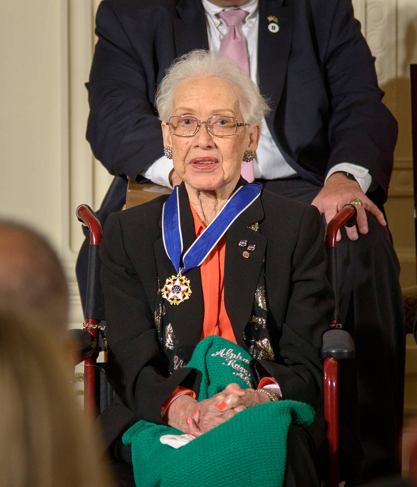
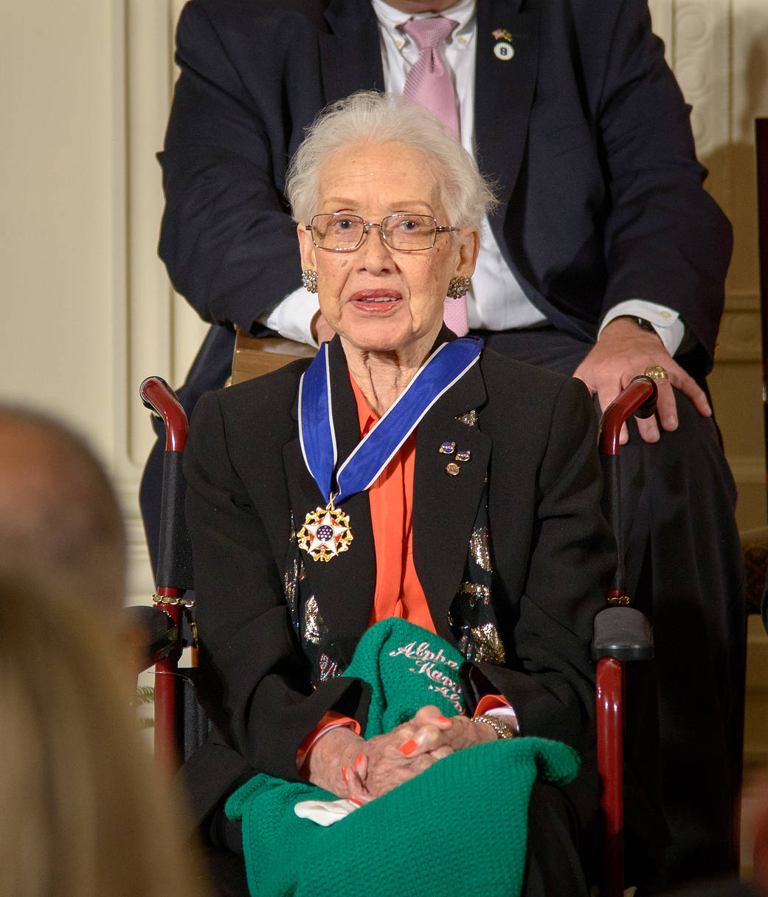

Nascimento: 26 de agosto de 1918
Falecimento : 24 de fevereiro de 2020
Cidade natal : White Sulphur Springs, WV
Educação: Matemática e francês, West Virginia State College, 1937
No dia 20 de julho, há exatos 54 anos, a nave da missão americana Apollo 11
levava os primeiros homens à Lua. O momento histórico foi transmitido ao vivo pela TV e assistido
por mais de 500 milhões de pessoas ao redor do mundo.Neil
Armstrong, o primeiro homem a pisar na Lua, disse após os primeiros passos a frase que ficou
marcada para a eternidade: “É um pequeno passo para um homem, um passo gigante para a
humanidade”.
O que talvez muitas pessoas não saibam é que na terra, entre as espectadoras do evento, estava Katherine
Johnson, responsável por calcular a trajetória da missão Apollo 11.
Katherine Coleman Goble Johnson, pode ser considerada uma criança prodígio. Ela
terminou o
colégio aos 14 anos e se formou em matemática e língua francesa aos 18 anos. Um ano depois de sua
graduação, Johnson foi a primeira mulher negra a ser selecionada para integrar um curso de pós-graduação
na West Virginia State University.
Sua jornada, no entanto, foi interrompida quando ela se casou e engravidou. Mãe de três filhas, a
matemática retornou à pesquisa em 1953, após saber de vagas para cientistas negros no então chamado
Comitê Consultivo Nacional para Aeronáutica (Naca).
Aprovada na equipe de Dorothy Vaughan, primeira mulher negra a chefiar um departamento do Naca, Johnson
passou quatro anos analisando testes de voo e investigou um acidente de avião. Em meio a isso, perdeu o
marido para um câncer, em dezembro de 1956.
Dois anos depois, o comitê foi transformado na Nasa, e a matemática passou a
produzir diversas publicações que sustentaram o crescimento da exploração espacial dos EUA. Ela foi a
primeira mulher negra a ter a autoria de artigos reconhecida na agência.
Enquanto a NASA se preparava para a missão orbital de John Glenn, Johnson foi chamada para fazer o
trabalho pelo qual ela se tornaria mais conhecida. A complexidade do voo orbital exigia a construção de
uma rede mundial de comunicações, ligando estações de rastreamento em todo o mundo a computadores IBM em
Washington, Cabo Canaveral na Flórida e Bermudas.
Os computadores foram programados com as equações orbitais que controlariam
a trajetória da cápsula na missão Friendship 7 de Glenn, desde a decolagem até a aterrissagem, mas os
astronautas tinham receio de colocar suas vidas sob os cuidados das máquinas de calcular eletrônicas,
que eram propensas a soluços e apagões. Como parte da lista de verificação pré-voo, Glenn pediu aos
engenheiros que “pegassem a garota” – Johnson – para executar os mesmos números nas mesmas
equações que haviam sido programadas no computador, mas à mão, em sua máquina de calcular mecânica de
mesa.
“Se ela disser que eles são bons, então estou pronto para ir”, Katherine Johnson lembra-se da
fala do astronauta.
O vôo de Glenn foi um sucesso e marcou uma virada na competição entre os Estados Unidos e a União
Soviética no espaço.
Ela morreu em 24 de fevereiro de 2020. O administrador da NASA, James Bridenstine, disse: "Nossa família da NASA está triste ao saber da notícia de que Katherine Johnson faleceu esta manhã aos 101 anos. Ela era uma heroína americana e seu legado pioneiro nunca será esquecido ."

Créditos: NASA
![No canto esquerdo uma mulher negra de cabelo na altura da nuca cor castanho escuro com uma roupa xadrex entre azule roxa, no meio ha uma mulher negra de cabelos castanho escuro na altura do pescoço,usando óculos de grau, no pescoço tem colar de bolas, ela olha para frente. no canto direito ha uma mulher negra de cabelos castanho escuro na altura do pescoço, usa uma blusa acolchoada na cor verde .
Na parte de baixo ha mais 7 imagens , Na primeira foto,um casal de pele negra que está de frente um para o outro,na segunda foto um homem de pele branca de terno azul segurando um papel, na terceira foto um foguete , na quarta foto um homem de pele branca, cabelos grisalhos, terno cinza e de óculos de grau.na quinta foto, uma mulher de costas para a foto e de frente para um quadro de universidade, ela escreve dados matemáticos, na sexta foto uma mulher de pele branca, cabelo loiro posa para a foto e na sétima foto, uma austronauta dentro do foguete.](assets/imagens/estrelas-alem-do-tempo.jpg "Imagem de promoção do filme Estrelas além do tempo.")
 
